수산물품질관리사-1차 (2017-07-28 기출문제)
1과목: 수산물품질관리 관련법령
1. 농수산물 품질관리법령상 농수산물품질관리심의회의 직무사항이 아닌 것은?
- 지정해역의 지정에 관한 사항
- 수산물품질인증에 관한 사항
- 수산물원산지표시 거짓표시에 관한 사항
- 유전자변형농수산물의 표시에 관한 사항
(정답률: 알수없음)

2. 농수산물 품질관리법령상 지리적표시의 등록이 결정된 품목에 대한 공고사항이 아닌 것은?
- 등록일 및 등록번호
- 신청자의 성명, 주소및전화번호
- 품질의 특성과 지리적 요인의 관계
- 지리적표시 대상 지역의 범위
(정답률: 알수없음)
3. 농수산물 품질관리법령상 수산물과 수산특산물의 품질인증 유효기간의 연장신청에 관한 내용이다. ( )에 들어갈 내용으로 옳은 것은?
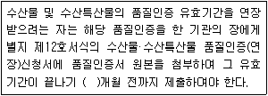
- 1
- 3
- 5
- 6
(정답률: 알수없음)
4. 농수산물 품질관리법령상 수산물품질관리사의 직무 중 해양수산부령으로 따로 정한 업무가 아닌 것은?
- 포장수산물의 표시사항 준수에 관한 지도
- 수산물의 선별⋅포장및 브랜드 개발 등 상품성 향상 지도
- 수산물의 규격출하 지도
- 수산물의 생산및불법어획물 지도
(정답률: 알수없음)
5. 농수산물 품질관리법상 수산물안전성 조사에 관한 설명으로 옳지 않은 것은?
- 수산물안전성 조사를 위하여 관계공무원은 해당 수산물을 생산⋅ 저장하는 자의 관계 장부나 서류를 열람할 수 있다.
- 해양수산부장관은 안전관리계획을 매년 수립⋅시행하여야 한다.
- 시⋅도지사는 안전성조사가 필요한 경우 관계공무원에게 무상으로 시료수거를 하게 할 수 있다.
- 식품의약품안전처장은 안전성검사기관을 지정하고 안전성조사와 시험분석업무를 대행하게 할 수 있다.
(정답률: 알수없음)
6. 농수산물 품질관리법령상 수산물품질관리사의 교육 실시기관으로 지정할 수 없는 기관은?
- 한국농수산식품유통공사
- 한국농어촌공사
- 한국해양수산연수원
- 해양수산부 소속 교육기관
(정답률: 알수없음)
7. 농수산물 품질관리법령상 유전자변형 수산물 표시의무자의 금지행위를 모두 고른 것은?
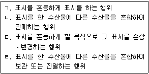
- ㄱ, ㄴ, ㄷ
- ㄱ, ㄷ, ㄹ
- ㄴ, ㄷ, ㄹ
- ㄱ, ㄴ, ㄷ, ㄹ
(정답률: 알수없음)
8. 농수산물 품질관리법령상용어의 정의로 옳은 것을 모두 고른 것은?
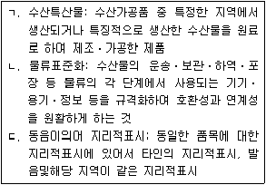
- ㄱ, ㄴ
- ㄱ, ㄷ
- ㄴ, ㄷ
- ㄱ, ㄴ, ㄷ
(정답률: 알수없음)
9. 농수산물 품질관리법령상 벌칙에 관한 설명으로 옳은 것을 모두 고른 것은?
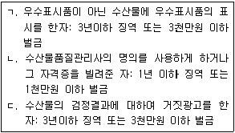
- ㄱ, ㄴ
- ㄱ, ㄷ
- ㄴ, ㄷ
- ㄱ, ㄴ, ㄷ
(정답률: 알수없음)
10. 농수산물 유통 및 가격안정에 관한 법령상 도매시장 개설자에 관한 설명으로 옳지 않은 것은?
- 도매시장법인이 다른 도매시장법인을 인수하는 경우에는 해당 도매시장 개설자의 승인을 받아야 한다.
- 도매시장 개설자는 도매시장법인이 판매업무를 할 수 없게 되었다고 인정되는 경우에는 그 업무를 직접 대행할 수 없고, 다른 도매시장법인으로 하여금 대행하게 할 수 있다.
- 도매시장 개설자는 거래 관계자의 편익과 소비자 보호를 위하여 상품성 향상을 위한 규격화, 포장개선 및 선도(鮮度) 유지의 촉진에 관한 사항을 이행하여야 한다.
- 도매시장 개설자는 도매시장을 효율적으로 관리⋅운영하기 위하여 필요하다고 인정하는 경우에는 도매시장법인을 갈음하여 그 업무를 수행할 법인을 설립할 수 있다.
(정답률: 알수없음)
11. 농수산물 유통 및 가격안정에 관한 법령상 중도매인에 관한 설명으로 옳은 것은?
- 중도매인은 도매시장 개설자로부터 허가를 받은 수산물의 경우에는 도매시장법인이 상장한 수산물 이외의 수산물을 거래할 수 있다.
- 도매시장 개설자의 허가를 받은 중도매인은 도매시장에 설치된 공판장에서는 그 업무를 할 수 없다.
- 도매시장 개설자가 법인이 아닌 중도매인에게 중도매업의 허가를 하는 경우 2년 이상 10년 이하의 범위에서 허가 유효기간을 설정할 수 있다.
- 중도매인은 도매시장법인이 상장한 수산물을 연간 거래액의 제한없이 해당 도매시장의 다른 중도매인과 거래할 수 있다.
(정답률: 알수없음)
12. 농수산물 유통 및 가격안정에 관한 법령상 도매시장 개설자가 시장관리자로 지정할 수 있는 자가 아닌 것은?
- 한국농수산식품유통공사
- 「지방공기업법」 에 따른 지방공사
- 도매시장 개설자가 도매시장법인을 갈음하여 그 업무를 수행하게 하기 위하여 설립한 공공출자법인
- 한국수산자원관리공단
(정답률: 알수없음)
13. 농수산물 유통 및 가격안정에 관한 법령상 경매사에 관한 설명으로 옳은 것은?
- 해당 도매시장의 산지유통인은 경매사로 임명될 수 있다.
- 도매시장법인이 경매사를 임면(任免)하고자 할 때에는 도매시장 개설자의 허가를 받아야 한다.
- 도매시장법인이 확보해야 하는 경매사의 수는 3명 이상으로 하되, 도매시장법인별 연간 거래물량 등을 고려하여 업무규정으로 그 수를 정한다.
- 민영도매시장의 경매사는 민영도매시장 개설자가 임면한다.
(정답률: 알수없음)
14. 농수산물 유통 및 가격안정에 관한 법령상 공판장에 관한 설명으로 옳지 않은 것은?
- 공판장에는 매매참가인을 둘 수 없다.
- 생산자단체와 공익법인이 공판장을 개설하려면 기준에 적합한 시설을 갖추고 시⋅도지사의 승인을 받아야 한다.
- 공판장의 중도매인은 공판장의 개설자가 지정한다.
- 수산물을 수집하여 공판장에 출하하려는 자는 공판장의 개설자에게 산지유통인으로 등록하여야 한다.
(정답률: 알수없음)
15. 농수산물 유통 및 가격안정에 관한 법령상 민영도매시장에 관한 설명으로 옳지 않은 것은?
- 민간인등이 민영도매시장을 개설하려면 해양수산부장관의 허가를 받아야 한다.
- 민영도매시장 개설자는 중도매인, 매매참가인, 산지유통인 및 경매사를 두어 직접 운영하거나 시장도매인을 두어 이를 운영하게 할 수 있다.
- 민영도매시장의 중도매인은 민영도매시장의 개설자가 지정한다.
- 민영도매시장의 시장도매인은 민영도매시장의 개설자가 지정한다.
(정답률: 알수없음)
16. 농수산물 유통 및 가격안정에 관한 법령상 도매시장의 개설 등에 관한 설명으로 옳은 것은?
- 시가 중앙도매시장을 개설하려면 도지사의 허가를 받아야 한다.
- 도매시장의 명칭에는 그 도매시장을 개설한 지방자치단체의 명칭이 포함되지 아니할 수 있다.
- 도매시장의 개설구역은 도매시장이 개설되는 특별시⋅광역시⋅특별자치시⋅특별자치도 또는 시의 관할구역으로 한다.
- 특별시 광역시⋅특별자치시 및 특별자치도가 도매시장을 폐쇄하는 경우에는 그 3개월 전에 해양수산부장관의 허가를 받아야 한다.
(정답률: 알수없음)
17. 농수산물의 원산지 표시에 관한 법령상 농수산물 또는 그 가공품에 있어 원산지 표시대상을 모두 고른 것은?
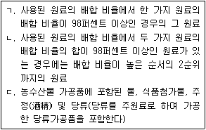
- ㄱ
- ㄱ, ㄴ
- ㄴ, ㄷ
- ㄱ, ㄴ, ㄷ
(정답률: 알수없음)
18. 농수산물의 원산지 표시에 관한 법령상 원산지 표시를 하여야 할 자에 해당하지 않는 것은?
- 휴게음식점영업소 설치⋅운영자
- 수산물가공단지 설치⋅운영자
- 위탁급식영업소 설치⋅ 운영자
- 일반음식점영업소 설치⋅ 운영자
(정답률: 알수없음)
19. 농수산물의 원산지 표시에 관한 법령상 거짓표시 등의 금지 행위에 해당하지 않는 것은?
- 원산지 표시를 거짓으로 하거나 이를 혼동하게 할 우려가 있는 표시를 하는 행위
- 원산지 표시를 혼동하게 할 목적으로 그 표시를 손상⋅변경하는 행위
- 살아 있는 수산물을 조리하여 판매 제공하기 위하여 수족관 등에 보관⋅진열하는 행위
- 원산지 표시를 한 농수산물이나 그 가공품에 원산지가 다른 동일 농수산물이나 그 가공품을 혼합하여 조리⋅판매⋅제공하는 행위
(정답률: 알수없음)
20. 농수산물의 원산지 표시에 관한 법령상 원산지의 표시 기준과 관련 없는 법은?
- 대외무역법
- 원양산업발전법
- 수산자원관리법
- 남북교류협력에 관한 법률
(정답률: 알수없음)
21. 농수산물의 원산지 표시에 관한 법령상 해양수산부장관이 국립수산물품질관리원장에게 위임한 권한이 아닌 것은?
- 과징금의 부과⋅징수
- 원산지 표시 등의 위반에 대한 처분및공표
- 원산지 표시에 대한 정보 제공
- 명예감시원의 감독⋅운영 및 경비의 지급
(정답률: 알수없음)
22. 농수산물의 원산지 표시에 관한 법령상 과징금 부과 및 징수에 관한 내용이다. ( )에 들어갈 내용이 순서대로 옳게 나열된 것은?
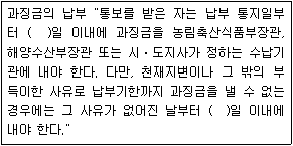
- 30, 7
- 30, 10
- 40, 7
- 40, 10
(정답률: 알수없음)
23. 친환경농어업 육성 및 유기식품 등의 관리 지원에 관한 법령상 유기식품의 '유기표시기준'으로 옳지 않은 것은?
- 표시도형 내부의 "유기식품"의 글자는 품목에 따라 "유기수산물" 또는 "유기가공식품"으로 표기할 수 있다.
- 표시 도형의 국문 및 영문 모두 글자의 활자체는 고딕체로 한다.
- 표시 도형의 색상은 녹색을 기본 색상으로 하되, 포장재의 색깔 등을 고려하여 파란색, 빨간색 또는 검은색으로 할 수 있다.
- 표시도형의 위치는 포장재 주 표시면의 정면에 표시한다.
(정답률: 알수없음)
24. 친환경농어업 육성 및 유기식품 등의 관리⋅지원에 관한 법령상 양식장에 양식생물(수산동물)이 있는 경우, pH 조절에 한정하여 사용가능한 물질은?
- 가성소다
- 과산화초산
- 석회석(탄산칼슘)
- 차아염소산나트륨
(정답률: 알수없음)
25. 친환경농어업 육성및유기식품 등의 관리⋅지원에 관한 법령상 친환경농어업에 대한 기여도 평가 시 고려사항으로 옳지 않은 것은?
- 어업환경의 유지⋅개선 실적
- 친환경어업 기술의 개발⋅보급 실적
- 항생제수산물 및 활성처리제 사용 수산물 인증 실적
- 친환경수산물 또는 유기어업자재의 생산⋅유통⋅수출 실적
(정답률: 알수없음)
2과목: 수산물유통론
26. 선어에 비해 수산가공품의 유통 상 장점을 모두 고른 것은?
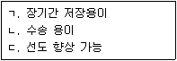
- ㄱ
- ㄱ, ㄴ
- ㄴ, ㄷ
- ㄱ, ㄴ, ㄷ
(정답률: 알수없음)
27. 수산물 유통경로에 관한 설명으로 옳은 것은?
- 참치 통조림의 유통은 원료 조달단계와 상품 판매단계로 구분된다.
- 원양산 냉동 오징어는 모두 공영도매시장을 통해 유통된다.
- 자연산 굴과 양식산 굴의 유통경로는 유사하다.
- 갈치는 소비지 도매시장을 경유해야만 한다.
(정답률: 알수없음)
28. 냉동 수산물 유통에 관한 설명으로 옳지 않은 것은?
- 원양어획물과 수입 수산물이 대부분이다.
- 유통과정에서의 부패 위험도가 낮다.
- 주로 산지위판장을 경유하여 유통된다.
- 유통을 위해서 냉동창고, 냉동탑차를 이용한다.
(정답률: 알수없음)
29. 수산물 소매시장에 관한 설명으로 옳은 것은?
- 소비자에게 수산물을 판매하는 유통과정의 최종단계이다.
- 수산물의 수집, 가격 형성, 소비지로 분산하는 기능을 수행한다.
- 수산물을 생산하여 1차 가격을 결정하는 시장이다.
- 중도매인이 가격 결정을 주도한다.
(정답률: 알수없음)
30. 양식 넙치 유통에 관한 설명으로 옳지 않은 것은?
- 횟감으로 이용되기 때문에 대부분 활어로 유통된다.
- 현재주 생산지는 제주도와 완도이다.
- 활어 유통기술이 개발되어 활어로 수출되고 있다.
- 주로 산지위판장에서 거래되어 소비지로 출하된다.
(정답률: 알수없음)
31. 선어 유통에 관한 설명으로 옳은 것은?
- 선어 유통에는 빙장이 필요 없다.
- 선어 유통은 비계통 출하 비중이 높다.
- 선어 유통에서 명태의 유통량이 가장 많다.
- 선어의 선도 유지를 위해 신속한 유통이 필요하다.
(정답률: 알수없음)
32. 자연산 참돔 활어 유통에 관한 설명으로 옳지 않은 것은?
- 소비지에서는 유사 도매시장을 경유하는 비중이 높다.
- 산지에서는 계통 출하로만 유통된다.
- 유통과정에서 활어차와 수조가 이용된다.
- 선어 유통보다 부가가치가 높다.
(정답률: 알수없음)
33. 수산물 전자상거래 활성화의 제약 요인이 아닌 것은?
- 수산물의 소비량이 적다.
- 운송비 부담이 크다.
- 생산및공급이 불안정하다.
- 반품처리가 어렵다.
(정답률: 알수없음)
34. 산지위판장에 고등어 100상자가 상장되면, 어떤 방식으로 가격이 결정되는가?
- 상향식 경매
- 하향식 경매
- 최저가 입찰
- 최고가 입찰
(정답률: 알수없음)
35. 수산물 판매량을 늘리기 위해 중간상인에게 적용되는 촉진수단이 아닌 것은?
- 가격 인하
- 무료 제품 제공
- 광고
- 할인쿠폰
(정답률: 알수없음)
36. 수산식품의 생산단계부터 판매단계까지의 정보를 소비자에게 전달하는 체계는?
- 지리적 표시제
- GAP
- 수산물 이력제
- QS-9000
(정답률: 알수없음)
37. 마트에서 생굴을 판매할 때, 판매정보수집에 이용되는 도구가 아닌 것은?
- POS 단말기
- 바코드
- 스토어 콘트롤러
- IC 카드
(정답률: 알수없음)
38. 갈치의 유통단계별 가격이 다음과 같다면 소비지 도매단계의 유통마진율(%)은 약 얼마인가? (단, 유통비용은 없다고 가정한다.)
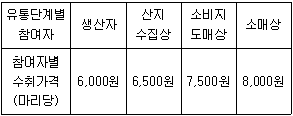
- 6
- 8
- 13
- 25
(정답률: 알수없음)
39. 고등어가 매월 500상자씩 판매되었으나 가격이 10% 인상됨에 따라 수요가 15% 감소하였다면 수요의 가격탄력성은?
- 0.5
- 0.7
- 1.1
- 1.5
(정답률: 알수없음)
40. 수산물 마케팅 환경요인 중 미시적 외부환경요인은?
- 종업원 역량
- 수산물 공급자
- 해수온도
- 어업기술
(정답률: 알수없음)
41. 수산식품의 브랜드명이 'B참치', 'B어묵', 'B 젓갈'등이라면, B수산회사가 채택한 브랜드 구조는?
- 브랜드 위계 구조
- 개별 브랜드 구조
- 기업 브랜드 구조
- 혼합 브랜드 구조
(정답률: 알수없음)
42. 다음에서 부산횟집이 넙치회 2kg을 37,000원에 판매하였다면, 적용된 가격결정방식은?
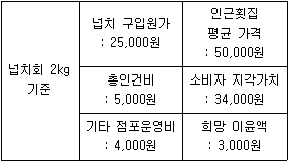
- 가치 가격결정
- 원가중심 가격결정
- 약탈적 가격결정
- 경쟁자 기준 가격결정
(정답률: 알수없음)
43. 수산물 유통의 사회경제적 역할이 아닌 것은?
- 사회적 불일치 해소
- 장소적 불일치 해소
- 품질적 불일치 해소
- 시간적 불일치 해소
(정답률: 알수없음)
44. 일반적인 수산물의 상품적 특성으로 옳지 않은 것은?
- 품질과 크기가 균일하다.
- 생산이 특정한 시기에 편중되는 품목이 많다.
- 가치에 비해 부피가 크고 무겁다.
- 상품의 용도가 다양하며, 대체 가능한 품목이 많다.
(정답률: 알수없음)
45. 수산물 유통구조에 관한 설명으로 옳은 것은?
- 유통단계가 단순하다.
- 소비지에는 도매시장이 없다.
- 다양한 유통경로가 존재한다.
- 유통비용이 저렴하고, 유통마진이 작다.
(정답률: 알수없음)
46. 수산물 유통기능의 설명으로 옳은 것을 모두 고른 것은?
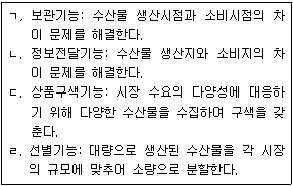
- ㄱ, ㄴ
- ㄱ, ㄷ
- ㄴ, ㄹ
- ㄷ, ㄹ
(정답률: 알수없음)
47. 산지위판장에 관한 설명으로 옳지 않은 것은?
- 전국적으로 동일한 위판수수료를 받는다.
- 수협 조합원의 생산물을 위탁판매한다.
- 경매를 통해 가격을 결정한다.
- 어장과 가까운 연안에 위치한다.
(정답률: 알수없음)
48. 수산물 표준화 및 등급화에 관한 설명으로 옳지 않은 것은?
- 소비자의 상품신뢰도를 향상시킨다.
- 품질에 따른 가격차별화를 가능하게 한다.
- 물류비용 절감으로 유통 효율성을 높일 수 있다.
- 현재 수산물 표준화 및 등급화는 모든 생산자의 의무도입사항이다.
(정답률: 알수없음)
49. 냉동 수산물의 단위화물 적재시스템(unit load system)에 관한 설명으로 옳지 않은 것은?
- 일정한 중량 또는 체적으로 단위화하여 수송하는 방법이다.
- 기계를 이용한 하역⋅수송⋅보관이 가능하다.
- 저장 공간을 많이 차지하는 단점이 있다.
- 포장비용을 절감하는 효과를 기대할 수 있다.
(정답률: 알수없음)
50. 수산물 공판장의 개설자에게 등록하고, 수산물을 수집하여 수산물 공판장에 출하하는 사람은?
- 매매참가인
- 산지유통인
- 경매사
- 객주
(정답률: 알수없음)
3과목: 수확후 품질관리론
51. 연육(surimi)의 제조에 사용되는 원료어 증 냉수성 어종인 것은?
- 명태
- 갈치
- 참조기
- 실꼬리돔
(정답률: 알수없음)
52. 어류의 선도 판정법이 아닌 것은?
- K값 측정
- 휘발성염기질소(VBN) 측정
- 관능검사
- 중금속 측정
(정답률: 알수없음)
53. 어육이 90% 동결되어 있을 때 체적 팽창률(%)은 약 얼마인가? (단, 어육의 수분 함량은 70%, 물의 동결에 의한 체적 팽창률은 9%로 하며, 수분을 제외한 나머지 성분의 동결에 의한 체적 변화는 무시한다.)
- 4.9
- 5.7
- 6.3
- 8.1
(정답률: 알수없음)
54. 해산어류의 대표적인 비린내 성분은?
- 트리메틸아민(TMA)
- 트리메틸아민옥시드(TMAO)
- 젖산(lactic acid)
- 글루탐산(glutamic acid)
(정답률: 알수없음)
55. 수산식품의 결합수에 관한 설명으로 옳지 않은 것은?
- 단백질, 탄수화물 등의 식품성분과 결합되어 있다.
- 미생물의 증식에 이용된다.
- 용매로 작용하지 않는다.
- 0℃에서 얼지 않는다.
(정답률: 알수없음)
56. 냉동 새우의 흑변에 관한 설명으로 옳지 않은 것은?
- 머리 부위에서 많이 발생한다.
- 새우에 함유된 효소 작용에 의해 생성된다.
- 최종 반응생성물은 과산화물이다.
- 흑변을 억제하기 위해서는 아황산수소나트륨(NaHSO3) 용액에 침지한다.
(정답률: 알수없음)
57. 냉동식품의 냉동 화상(freezer burn)을 억제하는 방법으로 옳지 않은 것은?
- 포장을 한다.
- 차아염소산나트륨 처리를 한다.
- 냉동식품 표면의 승화를 억제한다.
- 얼음막 처리(glazing)를 한다.
(정답률: 알수없음)
58. 통조림 용기로서 알루미늄관의 특성으로 옳지 않은 것은?
- 식염에 부식되기 쉽다.
- 붉은 녹이 발생하지 않는다.
- 흑변이 발생하지 않는다.
- 양철관에 비하여 무게가 무겁다.
(정답률: 알수없음)
59. 수산물통조림의 밀봉을 위한 밀봉기의 주요 요소가 아닌 것은?
- 리프터(lifter)
- 블리더 (bleeder)
- 시밍 롤(seaming roll)
- 시밍 척(seaming chuck)
(정답률: 알수없음)
60. 식품 포장의 기능 및 목적으로 옳지 않은 것은?
- 식품을 오래 보관할 수 있게 한다.
- 제품의 취급을 간편하도록 한다.
- 소비자에게 내용물의 정보를 감추기 위해 사용한다.
- 유해물질의 혼입을 막아 식품의 안전성을 높인다.
(정답률: 알수없음)
61. 수산가공품 중 수산물을 삶은(자숙) 다음 건조하여 제조한 것으로만 연결된 것은?
- 마른 오징어 - 마른 김
- 마른 김 - 마른 멸치
- 마른 멸치 - 마른 해삼
- 마른 해삼 - 굴비
(정답률: 알수없음)
62. 어체의 척추 뼈 부분을 제거하고, 2개의 육편으로 처리한 것은?
- 라운드(round)
- 필렛(fillet)
- 세미 드레스(semi-dressed)
- 드레스(dressed)
(정답률: 60%)
63. 액젓의 총질소 측정 방법으로 적합한 것은?
- 속실렛(Soxhlet)법
- 상압가열법
- 칼피셔(Karl-Fischer)법
- 킬달(Kjeldahl)법
(정답률: 알수없음)
64. EPA(eicosapertaenoic acid)에 관한 설명으로 옳지 않은 것은?
- 혈중 중성지질 개선에 도움을 준다.
- 오메가-3 지방산이다.
- 포화지방산이다.
- 고등어, 가다랑어 등에 함유되어 있다.
(정답률: 알수없음)
65. 연육을 제조할 때 사용하는 첨가물이 아닌 것은?
- 솔비톨(sorbitol)
- 중합인산염
- 설탕
- 감자 전분
(정답률: 알수없음)
66. 갈조류에 함유된 다당류를 모두 고른 것은?
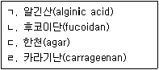
- ㄱ, ㄴ
- ㄱ, ㄷ
- ㄴ, ㄹ
- ㄷ, ㄹ
(정답률: 알수없음)
67. 브라인 침지 동결법에 관한 설명으로 옳은 것은?
- 브라인으로 암모니아를 주로 사용한다.
- 참치 통조림용 원료어의 동결에 흔히 이용된다.
- 포장된 수산물에는 적용할 수 없다.
- 수산물을 개체 별로 동결할 수 없다.
(정답률: 알수없음)
68. 통조림의 제조를 위한 주요 공정의 순서로 옳은 것은?
- 탈기 - 밀봉 - 살균 - 냉각
- 탈기 - 살균 - 냉각 - 밀봉
- 살균 - 냉각 - 탈기 - 밀봉
- 밀봉 - 살균 - 냉각 - 탈기
(정답률: 알수없음)
69. 다음과 같은 특징을 가지는 알레르기 유발물질은?
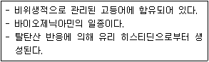
- 티라민(tyramine)
- 라이신(lysine)
- 히스타민 (histamine)
- 아르기닌(arginine)
(정답률: 알수없음)
70. 식품첨가물 중 산화방지제에 해당하지 않는 것은?
- 디부틸히드록시톨루엔(BHT)
- 부틸히드록시아니졸(BHA)
- 소르빈산칼슘
- 토코페롤
(정답률: 알수없음)
71. 식품안전관리인증기준(HACCP)의 7원칙 12절차 체계 중 준비단계에 해당하는 것은?
- HACCP팀 구성
- 위해요소분석
- 중요관리점(CCP)의 결정
- 중요관리점(CCP) 모니터링 체계 확립
(정답률: 알수없음)
72. 해산어류를 통하여 감염되는 기생충인 아니사키스 (Anisakis spp.)의 특징으로 옳은 것을 모두 고른 것은?
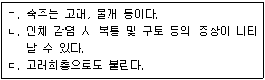
- ㄱ
- ㄱ, ㄴ
- ㄴ, ㄷ
- ㄱ, ㄴ, ㄷ
(정답률: 알수없음)
73. 노로바이러스 식중독에 관한 설명으로 옳지 않은 것은?
- 세균성 식중독의 일종이다.
- 사람의 분변에 오염된 물이나 식품에 의해 발생한다.
- 메스꺼움, 설사, 구토 등의 증상을 유발한다.
- 비가열 패류를 섭취할 경우 감염될 수 있다.
(정답률: 알수없음)
74. 다음 중 복어 독의 주요 성분은?
- 솔라닌(solanine)
- 고시폴(gossypol)
- 아미그달린(amygdalin)
- 테트로도톡신(tetrodotoxin)
(정답률: 알수없음)
75. 식품의 생물학적 위해요소로 옳지 않은 것은?
- 식중독 세균
- 잔류농약
- 식중독 바이러스
- 기생충
(정답률: 알수없음)
4과목: 수산일반
76. 다음에서 수산업법상 정의하는 수산업을 모두 고른 것은?
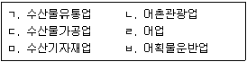
- ㄱ, ㄴ
- ㄷ, ㄹ, ㅂ
- ㄱ, ㄷ, ㄹ, ㅂ
- ㄴ, ㄹ, ㅁ, ㅂ
(정답률: 알수없음)
77. 다음에서 설명하는 내용으로 옳은 것은?
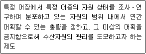
- ABC
- MSY
- MEY
- TAC
(정답률: 알수없음)
78. 국제수산기구 중 다랑어류(참치) 관리기구로 옳은 것은?
- 북서대서양수산위원회(NAFO)
- 남극해양생물보존위원회(CCAMLR)
- 중서부태평양수산위원회(WCPFC)
- 북태평양소하성어류위원회(NPAFC)
(정답률: 알수없음)
79. 수산물의 일반적 특징에 관한 설명으로 옳지 않은 것은?
- 수산물은 부패가 느리고 상품 규격화가 쉽다.
- 수산물 기호는 부모들의 섭취 경험에 영향을 받는다.
- 육상에서 생산되는 먹거리로부터 보충받기 어려운 각종 특수 영양소를 제공한다.
- 쌀을 주식으로 하는 나라일수록 식품소비 중 수산물이 차지하는 비율이 높은 편이다.
(정답률: 알수없음)
80. 다음에서 ( )에 들어갈 용어를 순서대로 나열한 것은?
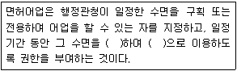
- 독점, 배타적
- 공유, 배타적
- 과점, 비배타적
- 협동, 비배타적
(정답률: 알수없음)
81. 수산자원조성의 적극적 활동에 해당하지 않는 것은?
- 인공어초 투하
- 바다목장 조성
- 어획량 제한
- 인공종자(종묘) 방류
(정답률: 알수없음)
82. 다음에서 설명하는 법으로 옳은 것은?
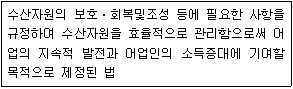
- 수산업법
- 어촌⋅어항법
- 수산자원관리법
- 수산업⋅어촌 발전 기본법
(정답률: 알수없음)
83. 다음에서 설명하는 양식어류 종은?
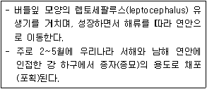
- 연어
- 뱀장어
- 가물치
- 메기
(정답률: 알수없음)
84. 다음에서 어류의 양식방법을 모두 고른 것은?
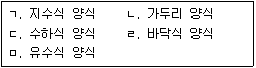
- ㄱ, ㄴ, ㄹ
- ㄱ, ㄴ, ㅁ
- ㄴ, ㄷ, ㄹ
- ㄷ, ㄹ, ㅁ
(정답률: 알수없음)
85. 양식생물의 종자(종묘)생산에 관한 설명으로 옳지 않은 것은?
- 계획적으로 인공 종자를 생산할 수 있다.
- 자연산 어미를 이용하여 인공 종자를 생산할 수 있다.
- 양식생물의 생태적인 습성에 맞추어 관리해야 한다.
- 로티퍼(rotifer)나 알테미아(Artermia)는 패류 종자의 초기 먹이로 주로 이용된다.
(정답률: 60%)
86. 양식 대상 어종을 선택할 때 고려해야 할 조건으로 옳지 않은 것은?
- 사료의 확보가 용이해야 한다.
- 질병의 내성이 약해야 한다.
- 대상 어종의 성장이 빨라야 한다.
- 종자(종묘) 수급이 원활해야 한다.
(정답률: 알수없음)
87. 다음 중 순환여과식 양식 어류의 배설물및 먹이 찌꺼기에서 가장 많이 발생되는 독성 물질은?
- 이산화탄소
- 중탄산나트륨
- 암모니아
- 철
(정답률: 알수없음)
88. 해조류 중 김의 생활사 단계가 아닌 것은?
- 구상체
- 사상체
- 중성포자
- 각포자
(정답률: 알수없음)
89. 일정시간 동안 어구를 수중에 고정 설치하여 물고기를 채포(포획)하는 어구분류와 어업이 옳게 연결된 것은?
- 끌어구류 - 통발어업
- 끌어구류 - 잠수기어업
- 걸어구류 - 자망어업
- 걸어구류 - 쌍끌이기선저인망어업
(정답률: 알수없음)
90. 일반적으로 집어등을 사용하지 않는 어업은?
- 채낚기어업
- 봉수망어업
- 근해선망어업
- 자망어업
(정답률: 알수없음)
91. 우리나라 해역별 대표 어종 및 어업이 옳게 연결된 것은?
- 동해안 - 대게 - 자망어업
- 동해안 - 붉은대게 - 기선권현망어업
- 서해안 - 멸치 - 채낚기어업
- 서해안 - 도루묵 - 통발어업
(정답률: 알수없음)
92. 다음에서 설명하는 어업은?
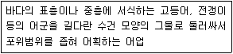
- 통발어업
- 정치망어업
- 자망어업
- 선망어업
(정답률: 알수없음)
93. 다음 중 고도 회유성 어종(Highly Migratory Species)은?
- 참다랑어
- 쥐노래미
- 짱뚱어
- 조피볼락
(정답률: 알수없음)
94. 수산자원량을 추정하는 방법 중 직접자원조사 방법이 아닌 것은?
- 트롤조사법
- 어업통계조사법
- 수중음향조사법
- 목시조사법
(정답률: 알수없음)
95. 경골어류의 종류와 어종이 옳게 연결된 것은?
- 갑각류 - 붉은대게
- 농어류 - 농어
- 상어류 - 백상아리
- 두족류 - 갑오징어
(정답률: 알수없음)
96. 어류의 계군을 구분하기 위한 조사방법으로 옳지않은 것은?
- 표지방류법
- 형태학적방법
- 연령사정법
- 생태학적방법
(정답률: 알수없음)
97. 수산생물의 종류와 연령형질의 연결이 옳지 않은 것은?
- 명태 - 이석
- 키조개 - 패각
- 돌고래 - 이빨
- 꽃새우 - 수염길이
(정답률: 알수없음)
98. 수산업법령상 수산업 관리제도와 대표 어업의 연결이 옳지 않은 것은?
- 면허어업 - 해조류양식어업
- 허가어업 - 연안어업
- 신고어업 - 나잠어업
- 등록어업 - 구획어업
(정답률: 알수없음)
99. 어류양식에서 발생하는 진균성 질병은?
- 수생균병
- 구멍갯병
- 쪼그랑병
- 물렁증
(정답률: 알수없음)
100. 다음에서 A의 값과 B에 들어갈 내용으로 옳게 연결된 것은?
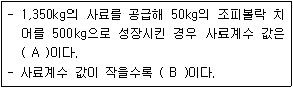
- A: 3, B: 경제적
- A: 3, B: 비경제적
- A: 10, B: 경제적
- A: 10, B: 비경제적
(정답률: 알수없음)
해설: 농수산물 품질관리법령상 농수산물품질관리심의회의 직무사항은 지정해역의 지정에 관한 사항, 수산물품질인증에 관한 사항, 유전자변형농수산물의 표시에 관한 사항 등이 포함되어 있습니다. 하지만 수산물원산지표시 거짓표시에 관한 사항은 다른 법령인 「수산물의 원산지 표시에 관한 법률」에 규정되어 있습니다.